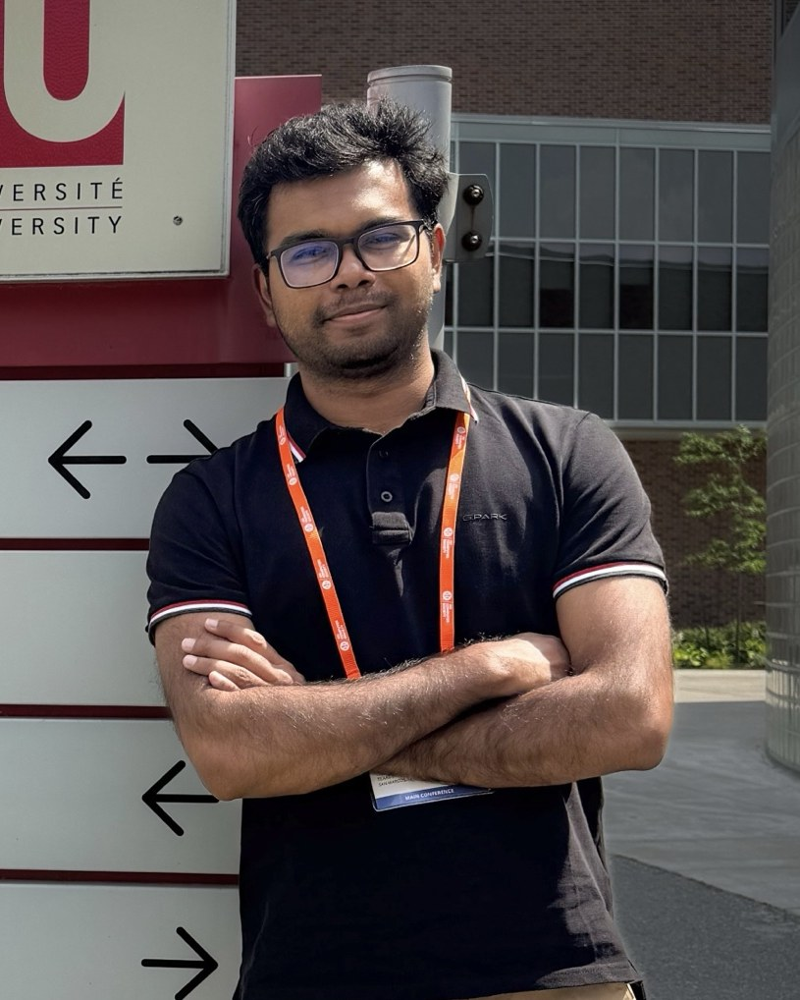

Ishrak Jahan Ratul
Ph.D. candidate in Computer Science at Texas State University, San Marcos, Texas All but dissertation (ABD)
Advised by Dr. Kecheng Yang, Associate Professor of Computer Science
I make machine learning inference faster, more resource-efficient and more predictable in timing on GPUs, from embedded boards to HPC clusters. During my Ph.D.: 5 peer-reviewed papers, including IEEE RTSS 2026, the Journal of Systems Architecture and two IEEE COMPSAC papers, plus one paper under review.
Research interests: machine learning systems, inference optimization, parallel and GPU computing, high-performance computing, real-time systems.

Your photoLooking for
Summer 2027 research internships in ML systems and GPU inference performance; also open to HPC and real-time systems roles.
Core tools
C/C++, CUDA, Python, PyTorch, TensorRT, ONNX Runtime, TVM, Nsight, MPI, OpenMP, Slurm on TACC Lonestar6 and Frontera.
Education
Ph.D. in Computer Science, Texas State, all but dissertation (ABD). B.Sc. in EEE, Islamic University of Technology.
Research
Selected work with measured results
Cascades send easy inputs to a small, fast model and escalate only the hard ones. It is the same idea behind how LLM services route requests between small and large models, exit early, and decode speculatively, and my work studies how to make it fast, accurate and predictable on real GPUs.
The thread through my papers: running a cascade's classifiers in parallel buys latency (26–29% faster on average than sequential, with tighter worst-case decision times, COMPSAC 2026), and stopping the losing branches early recovers much of the energy that parallelism costs (~30% less than parallel). The RTSS 2026 paper explains when cascades can lose accuracy and how to design them so they do not.
Accuracy Anomalies in Classifier Cascades
With Prof. Sanjoy Baruah and Dr. Kecheng Yang (alphabetical author order). We formally characterize the non-monotone accuracy–precision trade-off in multi-stage cascade pipelines, and identify and prove accuracy anomalies: a cascade can be less accurate than its own constituent classifiers, and raising the precision threshold can make it worse. We then give two accuracy-focused cascade-synthesis algorithms and evaluate them on Tiny ImageNet with six classifiers on an NVIDIA Jetson AGX Orin.
Artifact evaluated Code on GitHub · Trained models (Zenodo DOI)
Each classifier answers the inputs it is confident about and says "I don't know" for the rest, passing them on. Most inputs finish early on the fast model, which is where the latency savings come from.
Accuracy-aware IDK cascades for real-time object classification
Cascades built from fine-tuned classifiers on Tiny ImageNet, measured on a Jetson AGX Orin. The most accurate cascade is 27% faster than a standalone Swin Transformer (33.1 ms vs. 45.4 ms) at 89.35% vs. 89.56% accuracy. In a follow-up on ImageNet, running the cascade's classifiers concurrently on separate GPU streams cut average inference time by 26–29% compared with sequential cascades at the same accuracy, and tightened worst-case decision times.
Journal of Systems Architecture 2026, IEEE COMPSAC 2025 and 202627%faster than Swin Transformer aloneDeep learning inference frameworks on Jetson AGX Orin
A systematic comparison of PyTorch, ONNX Runtime, TensorRT, Apache TVM and JAX across CNN and Transformer workloads, measuring inference time, throughput, memory, power and accuracy. No single framework wins everywhere: TensorRT ran ResNet152 in 2.3 ms vs. 9.2 ms for PyTorch, yet PyTorch was faster on VGG16.
Electronics 2025 · Code on GitHub~4×TensorRT vs. PyTorch on ResNet152- Under review
Early stopping of speculative classifier cascades on GPUs
When several IDK cascades race on one GPU, the losing branches keep using GPU time after a winner has answered. Stopping those branches early cut energy per request by about 30% compared with parallel execution, with under 0.3 points of accuracy loss, on an NVIDIA RTX A4000; also evaluated on Jetson Orin, with the artifact released.
PyTorch, CUDA streams, Nsight Systems~30%less energy per request vs. parallel execution Earlier work: machine learning for health
Co-developed Bangladesh's interactive national COVID-19 digital surveillance system, and built classifiers for heart failure, pediatric HSCT survival and cervical cancer risk.
Frontiers in Digital Health 2023, plus four health-ML papers (2022–2023)1.98MCOVID-19 screenings by Dec 2022
Parallel speculative decoding for LLM inference
Developing parallel speculative decoding for transformer LLM inference on a shared GPU, running the draft and verifier models concurrently to lower decode latency.
Advanced parallel computing
CUDA and OpenMP implementations of connected components, radix sort, counting sort and single-source shortest paths, plus roofline analysis of the CUDA execution model and memory hierarchy.
HPC at scale (Pthreads, OpenMP, MPI, CUDA) · LLVM analysis and optimization passes
Experience
Graduate Research Assistant
Aug 2023 – present- Proved accuracy anomalies in classifier cascades and designed deadline-aware cascade synthesis (IEEE RTSS 2026, with Prof. Sanjoy Baruah; alphabetical author order); artifact evaluated.
- Built IDK cascades 27% faster than a standalone Swin Transformer, and parallel GPU-stream cascades 26–29% faster than sequential (JSA 2026, COMPSAC 2025 and 2026).
- Cut energy per request ~30% by stopping losing cascade branches early on RTX A4000 and Jetson Orin.
- Benchmarked five inference frameworks on Jetson AGX Orin; TensorRT ~4× faster than PyTorch on ResNet152 (Electronics 2025).
- In progress: parallel speculative decoding for LLM inference on a shared GPU.
Doctoral Instructional Assistant
Aug 2023 – present- CS 3360, Computing System Fundamentals: supported lectures, graded assessments and exams, held office hours and helped students.
Research Engineer
Aug 2022 – Apr 2023- Co-developed a national digital health surveillance system for COVID-19 in Bangladesh (Frontiers in Digital Health 2023).
Undergraduate Researcher
Jan 2021 – May 2022- Built classifiers for heart failure, pediatric HSCT survival and cervical cancer prediction; the HSCT model kept 94.73% accuracy using only 11 of 59 features.
Education
Ph.D. in Computer Science
Texas State University, San Marcos, TX. Advisor: Dr. Kecheng Yang.
B.Sc. in Electrical and Electronic Engineering
Islamic University of Technology (IUT-OIC), Bangladesh. Thesis in biomedical machine learning.
Teaching interests: computer architecture, parallel and GPU computing, operating systems, real-time systems, machine learning, deep learning, data structures and algorithms.
Skills
- Languages
- C/C++, CUDA C/C++, Python, MATLAB, SQL, Bash
- ML and inference
- PyTorch, TensorFlow, JAX, ONNX Runtime, TensorRT, Apache TVM, scikit-learn
- Parallel and GPU
- CUDA, MPI, OpenMP, Pthreads, HIP, multi-GPU, hybrid MPI + threads + GPU programming
- Performance
- Nsight Compute, Nsight Systems, perf; occupancy, memory-behavior and atomics tuning; speedup and efficiency analysis
- HPC and systems
- TACC supercomputers (Lonestar6, Frontera), Slurm, Linux, Git, HPC cluster workflows; graph analytics (BFS/SSSP), partitioning and load balancing
- Hardware
- NVIDIA Jetson AGX Orin, NVIDIA discrete GPUs, 8051 and Arduino microcontrollers
- Other tools
- LaTeX, Jupyter, matplotlib
Earlier engineering projects: IoT health monitoring, CNN emotion recognition, ant colony optimization, 8051 embedded systems, a PCB-built digital calculator and Arduino robotics.
Publications
10 peer-reviewed papers: 5 during the Ph.D. (2025–2026), 5 earlier
Google Scholar profile
Accuracy Anomalies in Classifier Cascades
Summary
Shows that the overall accuracy of an IDK cascade can fall below that of its own constituent classifiers, and can get worse even as the precision threshold is raised. Proposes two accuracy-focused cascade-synthesis algorithms (maximum accuracy under a deadline; minimum expected time under accuracy and deadline constraints), evaluated on Tiny ImageNet with six classifiers on an NVIDIA Jetson AGX Orin. The research artifact passed artifact evaluation.
Accuracy-Aware IDK Cascades for Real-Time Object Classification at the Edge
Summary
Composes IDK classifier cascades from fine-tuned existing models and evaluates them on Tiny ImageNet and CIFAR-100. On Tiny ImageNet, the most accurate cascade reaches 89.35% top-1 accuracy in 33.1 ms on average, 27% faster than a standalone Swin Transformer (89.56%, 45.4 ms).
Fast and Accurate Classification with Parallel IDK Classifier Cascades
Summary
Runs the classifiers of an IDK cascade concurrently on separate GPU streams, with a greedy threshold-lowering method that favors earlier acceptance. On ImageNet with an NVIDIA Jetson AGX Orin, it cuts average inference time by 26–29% compared with sequential cascades at the same accuracy, and tightens worst-case decision times. Presented at COMPSAC 2026 in Madrid.
Accelerating Deep Learning Inference: A Comparative Analysis of Modern Acceleration Frameworks
Summary
Compares PyTorch, ONNX Runtime, TensorRT, Apache TVM and JAX on an NVIDIA Jetson AGX Orin across inference time, throughput, memory, power and accuracy. Framework choice depends on the model: TensorRT ran ResNet152 about 4× faster than PyTorch, while PyTorch was faster on VGG16.
Cascading IDK Classifiers to Accelerate Object Recognition While Preserving Accuracy
Summary
Builds IDK cascades on Tiny ImageNet that run models from fastest to most accurate and stop as soon as one is confident. On a Jetson AGX Orin, the fastest cascade is 2.57× faster than a standalone Swin Transformer, and the most accurate is 27% faster at nearly the same accuracy. Presented at COMPSAC 2025 in Toronto.
Analyzing Perceived Psychological and Social Stress of University Students: A Machine Learning Approach
Summary
Surveys 444 university students and builds supervised models to predict perceived stress, using PCA and the chi-squared test for feature reduction and grid search and a genetic algorithm for hyperparameter tuning. A multilayer perceptron with PCA and grid search was most accurate; about 24% of students showed extremely high psychological stress.
An Interactive National Digital Surveillance System to Fight COVID-19 in Bangladesh
Summary
Describes Bangladesh's nationwide COVID-19 surveillance system: a mobile app and cloud server used by community health workers, with rule-based AI that sorts people into five risk groups and refers them to care. It completed 1,980,323 screenings between April 2020 and December 2022.
Survival Prediction of Children Undergoing Hematopoietic Stem Cell Transplantation Using Different Machine Learning Classifiers by Performing Chi-Square Test and Hyperparameter Optimization: A Retrospective Analysis
Summary
Predicts survival of children after bone marrow (HSCT) transplantation on a public dataset. Using chi-square selection to keep only the top 11 of 59 features, plus grid-search hyperparameter tuning, matched the 94.73% accuracy of the full dataset with less time and resources.
A Comprehensive Investigation of the Performances of Different Machine Learning Classifiers with SMOTE-ENN Oversampling Technique and Hyperparameter Optimization for Imbalanced Heart Failure Dataset
Summary
Compares six classifiers for predicting heart-failure survival on a 299-patient UCI dataset, with data scaling, hyperparameter search and SMOTE-ENN resampling. Random Forest with SMOTE-ENN and standard scaling reached the best test accuracy, 90%.
Early Risk Prediction of Cervical Cancer: A Machine Learning Approach
Summary
Machine learning models for early risk prediction of cervical cancer from patient risk-factor data.
Presentations and talks
- "Fast and Accurate Classification with Parallel IDK Classifier Cascades," IEEE COMPSAC 2026, Madrid, Spain (July 2026)
- "Cascading IDK Classifiers to Accelerate Object Recognition While Preserving Accuracy," IEEE COMPSAC 2025, Toronto, Canada (July 2025)
- "Fast and Accurate Classification with Parallel IDK Classifier Cascades," poster, MVAPICH User Group (MUG) Conference, August 2026, supported by a MUG travel grant
News
Recent milestones
- Submitted a paper on early stopping of parallel classifier cascades on GPUs, with the artifact released.
- RTSS 2026 research artifact accepted in artifact evaluation.
- Presented the poster "Fast and Accurate Classification with Parallel IDK Classifier Cascades" at the MVAPICH User Group (MUG) Conference, supported by a MUG travel grant.
- "Accuracy Anomalies in Classifier Cascades" accepted at IEEE RTSS 2026, with Prof. Sanjoy Baruah and Dr. Kecheng Yang.
- Presented "Fast and Accurate Classification with Parallel IDK Classifier Cascades" at IEEE COMPSAC 2026 in Madrid.
- Presented "Cascading IDK Classifiers to Accelerate Object Recognition While Preserving Accuracy" at IEEE COMPSAC 2025 in Toronto, Canada.
- Started the Ph.D. at Texas State University with the Spoonamore Doctoral Merit Fellowship.
Service and honors
Peer review
completed reviews for 17 journals
- BMC Medical Informatics and Decision Making4
- IEEE Transactions on Services Computing3
- Applied Computational Intelligence and Soft Computing2
- Scientific Reports2
13 more journals
- Applied AI Letters1
- BMC Medical Research Methodology1
- Case Reports in Pediatrics1
- Concurrency and Computation: Practice and Experience1
- Discover Artificial Intelligence1
- Discover Mental Health1
- Discover Toxicology1
- Discrete Dynamics in Nature and Society1
- Engineering Reports1
- Innovations in Systems and Software Engineering1
- Int'l Journal of Telemedicine and Applications1
- Journal of Engineering1
- Signal, Image and Video Processing1
Awards and fellowships
- Spoonamore Doctoral Merit FellowshipTexas State University, 2023
- Travel GrantMVAPICH User Group (MUG) Conference, 2026
Memberships
- IEEEGraduate student member
- IEEE Computer SocietyGraduate student member
- ACMGraduate student member
Photography and travel
Roam with Ratul
I photograph streets on Fujifilm. Profiling a GPU kernel and waiting for a frame to line up take the same patience.
Contact
If your team works on fast, accurate and predictable inference, I'd like to hear from you.
ishrakratul@gmail.comUniversity: ishrakratul@txstate.edu